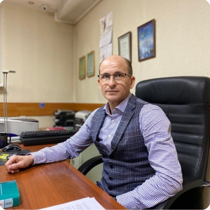
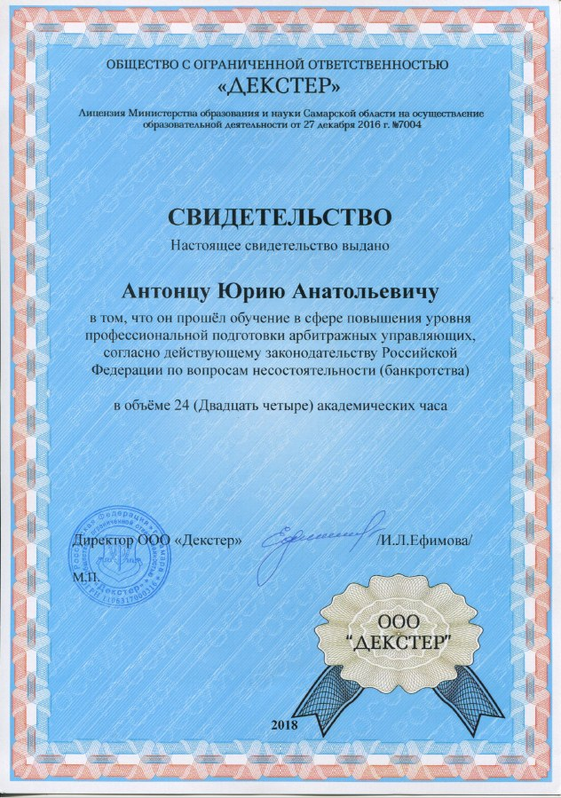

Обо мне
Антонец Юрий Анатольевич — арбитражный управляющий из Томска
- На первой встрече смотрю документы и говорю, подходит ли вам банкротство. Если нет — объясняю почему и что можно сделать вместо него
- Сразу называю полную стоимость: гонорар и обязательные расходы
- Веду дело сам: документы, суд, переписка с кредиторами
25+ летв банкротстве
250+процедур
320+ млн ₽списанных долгов
1999Свидетельство ФСДН России № 7скан
2003Свидетельство Минюста РФ, серия АА № 002916скан
2016Повышение квалификации № 70АА 0001188скан
2018Свидетельство ООО «Декстер»скан

Офис в Томскеприём по предварительной записи


